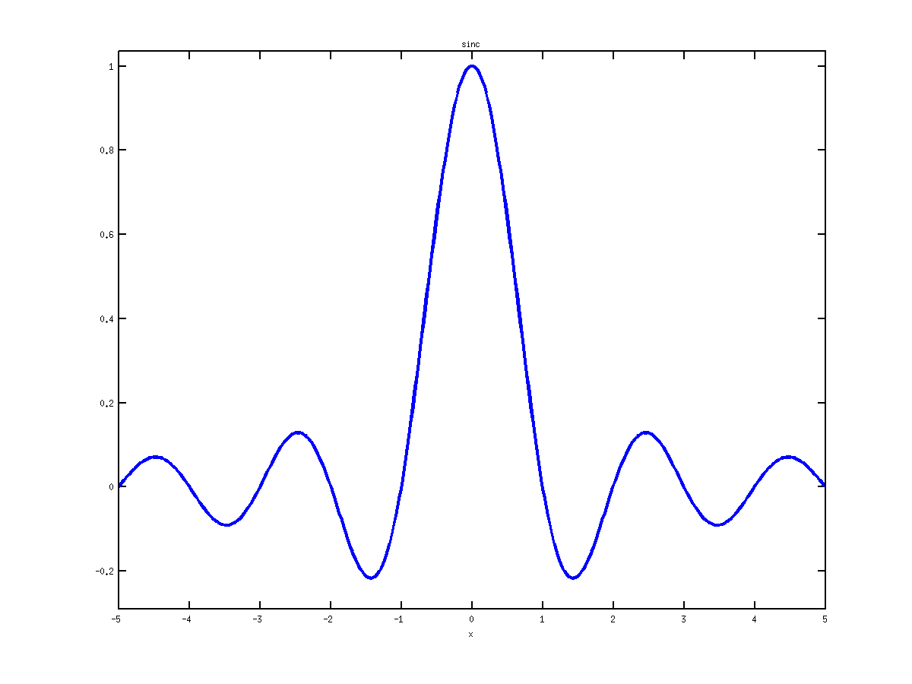

Reproducible research with Emacs org-mode
1 Problems we want to address
1.1 Reporting computational results
- setup and run calculations
- prepare simulation files and data
- execute the simulation files
- present the results in pdf document or on webpage
- explain what / how is done (\(\leftrightarrow\) 1.1)
- copy-paste results from Matlab in a document
- make the results reproducible (readme file)
- make the code and the data available
- explain how to run the code on the data (make file)
- redo steps 1.2, 2, 3 every time 1.1 is modified
1.2 Why making the results reproducible?
- comparing your method with another method
- was the code available?
- asking the authors, have you got it?
- if you got it, was it clear how to use it?
- applying your method on examples from a paper
- was the data available?
- were all details about the simulation setup given?
- sharing your code with someone else
- was it easy to find it?
- did you remember how to use it and how it works?
1.3 Writing better code documentation
- link algorithms to software implementation
- writing formulas in comments is tedious
- pasting code and results into text is tedious
- tedious means time consuming and error-prone
- we need papers with more implementation details
as well as code with better explanations - can be done at the same time (literate programming)
1.4 Tools available
- matlab publish
- m-file with text in comments
- export to pdf (via \LaTeX) and html
- results are inserted in the document
- no literate programming support
- issues with functions calling
- noweb / nuweb
- mix \LaTeX{} and any sort of code
- external program extracts code and tex files
- results are not inserted in the document
- emacs \(+\) org-mode
- combines literate programming and reproducibility
- does not need additional software
- works with any language
2 Solution via Emacs org-mode
2.1 Outline
- code, text/formulas, and results are in one source file
- markup language separates code, data, and text
- code can be run and output is automatically inserted
- the editor interacts with the OS
- calling the compiler and capturing the output
- source is readable and can be exported (pdf, html)
2.2 Emacs in a nutshell
- written in 1976 at MIT AI Lab by Stallman and Steele
- extensible in Emacs-lisp
- every aspect of the editor is customizable
- any functionality can be added
- operates in modes that provide features
- Matlab, C/C++, LaTeX, … modes
- provides editing functions, syntax highlighting, …
- has integration with the OS
- you can do everything you need from within emacs
2.3 Emacs Org-mode
- written by Carsten Dominik in 2003
- document organization via fold-able outline structure
- task management, links, tables, …
- markup language: code, \LaTeX, … can be embedded
- code execution and results capture
- export engine
2.4 Code evaluation
- example:
[pi exp(1) sqrt(2)]
| 3.1416 | 2.7183 | 1.4142 |
- code is tagged
- see source file
- can be evaluated
- place the cursor within the block
- and type
Ctrl+c, Ctrl+c
- options control the export
- see the manual
- the value of
ansafter evaluation is included
2.5 Figure output
ezplot('sinc', [-5, 5]) print -dpng f1.png, ans = 'f1.png'

2.6 Literate programming
- uses the noweb syntax
- see, user manual
- options control the export, see noweb options
datablocka = 1; b = 2;
computationblocka + b- putting them together
<<data>> <<computation>>
3
3 Trying it out
3.1 Trying it out
- publish is build in Matlab
- noweb / nuweb require installation
- emacs with org-mode
- export to pdf and html works "out of the box"
- in Windows, matlab integration needs tweaking
- Egon and I are still trying to set it up …
- references